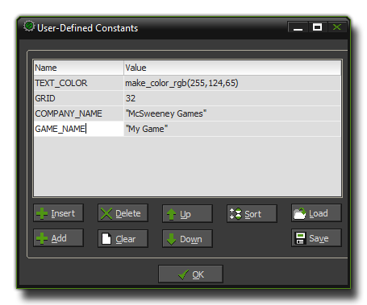

Constants
This section outlines how to define constants that you can then use in actions, scripts and code.
A constant is, as the name implies, something that can hold a constant value (real, or boolean) or a string. This is different to a variable in that it can't be changed once defined, although it is
global in scope as all instances in all rooms can use it, and it will always be the same value. There are a number of built-in constants within GameMaker:Studio, like the vk_ ones
for the keyboard or the c_ ones that hold different colors, but you can also define your own constants to be used in your games too.
To define constants you chose Define Constants from the drop down Resources menu at the top of the main window (or click on the resource tree icons, as explained below) and the following
window will open :

The main part of this window is take up with the list of constants, and will start off empty, ready for you to create your own. To do this you would click on the button marked Add at the bottom left
of the window, which will then create a new, empty, constant with the Name section highlighted. You must give all your constants a name, and as with all things in GameMaker:Studio this
name must be unique and it is recommended that you distinguish it in some way from other variables, for example, by using all capitals, or by using a suffix or prefix. Note, that you cannot use any symbols
except the under-bar (_) and the constant cannot start with a number.
Once you have named your new constant you must give it a value. This value can be numeric, a function or a string. For a string it must be wrapped in quotes ("") and if it is a function, it cannot make
reference to anything in the game (the current room, instances, or scripts etc...) as the constants are initialised before everything else, but it can however use resources like sprites and objects.
When you have defined a few constants you can use the buttons at the bottom of the window to change them around and add, insert or delete them. Add will add one at the end of the list, Insert
will insert the next constant above the current one, and delete will delete the current one. You may also press Clear to clear the whole list of constants, which will open a prompt to ask if you are sure you
really want to do that before deleting the whole list. beside these button are two labelled Up and Down which simply move the constants up and down the list, and beside those is the
sort button which will put the constants into alphabetical order, with the ones starting with "A" at the top.
Finally, there are two buttons marked Load and Save. With these, you can load into your project constants that you have previously defined in an external editor, or that you have saved from
a previous game. If you have already defined constants when you load some from a file, the new ones will be appended on at the end of the list. A saved constant list is stored in a simple *.txt file and
can easily be edited and added to by any application that reads these files (Notepad++, for example). You can even pre-define your own text file with a set of constants to be loaded into GameMaker:Studio
as the format is simply : NAME = VALUE.
The Resource Tree
Constants are included as part of the resource tree on the left of the GameMaker:Studio IDE. When you create a new game, you will have two sets of constants - All Configurations and
Default. Constants created in "All Configurations" will be available to you no matter what configuration you have chosen (see the section on Configurations for more
information), and you can then add configuration-specific ones to any other lists that you will have, with each new configuration creating a new constants list.